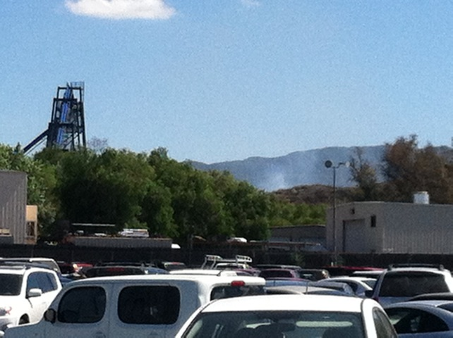
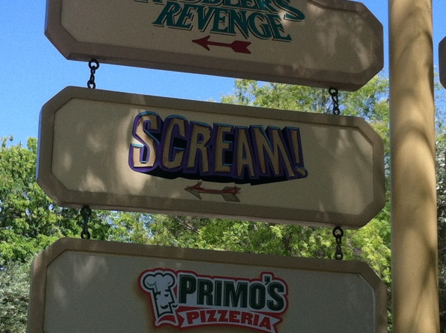

| |
Six Flags Magic Mtn Summer 2013
All right. Its time for our yearly Six Flags Magic Mtn Summer Update. And as always, we took a ton of tiny little microscopic visits and strung these into our update. Now this one is much smaller than in previous years due to me not visiting the park as much since I'm kind of burned out on Six Flags Magic Mountain. I've been busy with other stuff and just didn't want to go early and ride stuff that much. Though I did go a few times and have some fun. And yeah. Here's Scream.
Nice censorship there Six Flags =).
Yep. I'm still getting on Lex Luthor a lot thanks to the single riders line. And yep. Its still kicking ass looking down. =)

Oh joy. The smoke is rising from YET ANOTHER California Wildfire.
*Sigh* Seriously Six Flags Magic Mountain? Just about every other park already opened their new 2013 coaster. And here you are still working on Full Throttle *shakes head*.

Hmm. Nice Scream Sign style. Not sure if this was intentional or just out of neglect and stuff peeling away. Either way, I like it.
Still one of the best coasters I've ridden. =)
 No matter how burned out I get of the park and tired of all this, I am always happy with a ride on X2 (Shame that its gonna be closed for the rest of the year now. Good job stupid chain).
No matter how burned out I get of the park and tired of all this, I am always happy with a ride on X2 (Shame that its gonna be closed for the rest of the year now. Good job stupid chain).
I see you rat in the X2 Break Room. Nice Sanitation you have Six Flags.
A bunch of guests kept leaving these stuffed wolves/huskies at Roaring Rapids. So I took one of them and took him as a friend for me at P2. Coincidentally, I named him P2 Buddy. I know. I'm a genius namer. =)
"Ok. Now this just f*cking pisses me off. Full Throttle isn't even open yet. And already. GRAFITTI!!! F*CKING GRAFITTI!!! I HATE PEOPLE!!!"
Ok. Now that is freaky. I didn't even think lizard tails could be that long.
All right. Time for yet another Incrediblecoasters working at SFMM story as well as another Incrediblecoasters Rant. You better brace yourselves, because this one is a REALLY REALLY long one. Ok, so you know at Six Flags Magic Mountain, my main ride I work at is Roaring Rapids. And the main thing spot at Roaring Rapids that I work at is P2. Now for those of you who don't know, P2 is essentially idiot control. You sit down for between two to three hours and just watch the boats float on by, and your job is to inspect every single boat to make sure that they don't do anything stupid like stand up on the ride, or take off their seatbelt, or their shirt, or their shoes. So yeah, a good majority of the time, you are just sitting there, staring at boats of people for hours. And yeah. It gets REALLY F*CKING BORING!!! So you better comfortable because you're gonna be here for up to three hours. Well, you better be careful that this asshole doesn't catch you because if you aren't sitting perfectly upright at a 90 degree on the bare wooden bench, monitoring the boats 100%, he's gonna f*cking bite you in the ass. Though really, just beware of this stuff because he'll find any reason to scream at you, and when he targets you, he just absolutely goes APE-SH*T!!! He literally just pops up out of nowhere and screams "DO YOU REALLY THINK THIS IS OK!!? YOU ARE SUPPOSED TO BE SITTING PROPERLY IN AN UPRIGHT POSITION!!!" I just stumble and say "Yes Sir" because this is the type of person who can fire me since he's the Head of Safety. He then goes off about shaving and asks "OH MY GOD!!! I CAN SEE SOME HAIRS ON YOUR CHIN!!! WHEN WAS THE LAST TIME YOU SHAVED!!?" I replied "Yesterday Morning sir." He then screamed "YOU NEED TO SHAVE!!! YOU'RE VIOLATING CODE NUMBER BLAH BLAH WHO GIVES A SH*T!!!" Because as the head of safety, it is good to inform everyone about the dangers of facial hair. Just think of all the men who die each year from beards and the millions more who have to be hospitalized for facial hair. Thank you Tom Edgar for protecting and warning of this looming threat to our safety. Wait a second, that doesn't sound right. That almost sounds like... Yeah. It totally is.
But anyways, lets get back to this asshole and his continued ramblings about the evils of improper posture. He then goes on to ask me "WHY DO YOU THINK IT IS ACCEPTABLE TO KICK BACK LIKE THAT!!? WHY DO YOU FEEL ENTITLED TO DO THAT!!?" Trying to come up with an answer that'll please this asshole-licking c*nt, I just mumble that I've been out here for about 3 hours now and that its 100 degrees today. He then shouts "LOOK BUDDY!!! IT'S HOT OUT HERE FOR EVERYONE TODAY!!! THAT IS NO EXCUSE FOR YOU TO SLACK OFF ON THE JOB!!!" He then screams on "THESE GUESTS PAID $60 TO ENTER THIS PARK!!! DO YOU REALLY THEY DESERVE TO THEN SEE A DIP-SH*T (No, he didn't actually call me this. But he might as well have) LIKE YOU RELAXING LIKE HE'S ON VACATION IN HAWAII!!? WE ARE NOT PAYING YOU TO DO THIS!!!" Now because this asshole has the power to fire me on the spot, I have to respond with "No sir. No sir. No sir." which to such a terrible human being, is just absolutely degrading. Seriously had to hold my tongue to prevent me saying this to him. "No sir. No sir. No Daddy sir. I was wrong Daddy sir. You were right and I was wrong. Would you like me to shine your shoes and wipe your ass Daddy sir? Well that's not gonna happen because F*CK YOU!!!
A: I have been out here for 3 hours and I am sitting here doing my job. In case I have to remind you, my job is to watch for idiots so I can yell at them for doing something stupid like standing up or taking off their shirt (which I don't find stupid, but whatever. Not my call). My job does NOT include being as physically uncomfortable as possible to ensure the guests that I am NOT enjoying myself and that I am as miserable as possible on the job.
B: Anyone who pays $60 to get into Six Flags Magic Mountain is an idiot. Everyone used some sort of coupon to break off chunks of the price. Seriously, its easier to find a discount for Six Flags Magic Mountain than it is to find salt in the ocean.
C: Guests LOVE seeing me at P2! At worst, they just ignore me and enjoy their ride and pretend like I don't even exist. At best, they will frequently wave me and shout all sorts of questions at me such as "What's your name!?" "THIS RIDE IS AWESOME!!!" "Help me! I don't want to get wet!" and "YOU'RE SEXY/HOT!!! WHATS YOUR PHONE NUMBER!!?" (Yes, I have had girls, and even a gay guy shout this at me). =) None of them seem to be mortified and horrified at the improper posture and me making myself feel at home (Which I SHOULD MAKE MYSELF FEEL THAT WAY when I spend 8 HOURS A DAY 6 DAYS A FREAKING WEEK HERE!!!). But the most frequent thing I get told, well aside from "Hi there!" is stuff like "I want your job!", "You have the best job in the world!", "How do I apply for your job!?" "You lucky bastard! I wanna do that for a living!" Well to answer the guests "No, you don't want this job, but thanks for the flattering comments". =) But that's not the point. The point is they see me acting human, maybe because I AM A HUMAN, as freaking sweet! Shut up and thank me for recruiting tons of people to work at this park! To anyone I may have misled into working at Six Flags Magic Mountain, I sincerely apologize.
And D: Well first off, I already talked about how I am doing my job. Go back to A for that. But you're complaining about my pay!? YOU PAY PENNIES!!! I WORK F*CKING MINIMUM (SLAVE) WAGE!!! YOU BARELY PAY ME AT ALL!!! Don't you have the nerve to complain about money to me!!
He then goes on into the most absolutely absurd straw man argument imaginable. He rambles on and on about "OH THE GUESTS WIlLL SEE YOU SITTING LIKE THAT AND THEY'LL WORRY ABOUT YOU!!! OH LOOK EVERYONE!!! LOOK AT THE UNCONSCIOUS MAN!!! AND THEN THEY'LL STAND UP AND GO NUTS BECAUSE YOU AREN'T WATCHING THEM!!!" Umm...where the hell do I begin with how absurd and stupid this argument is!? I'd call this a straw man argument, but honestly, even straw man arguments aren't this bat-sh*t, off the walls, Cuckoo for Cocoa Puffs, CRAZY!!! But common sense and basic knowledge aside about how this asshole apparently has no idea about what being unconscious even means, if his logic follows that if you are relaxed in the slightest bit, then his objection is to make me into a mannequin. Seriously, sit perfectly still, don't move, don't emote, just sit, be motionless and do your job. YOU WANT ME AS A MANNEQUIN AND YOU KNOW IT!!! He then asks "How long have you been working here pal!?" Why is this always the ultimate golden asshole SFMM Question!? Every asshole at SFMM I've dealt with, they've ALWAYS asked me this question in just about the rudest tone possible. I was asked this by the Roaring Rapids Breeder when I first started working here and now this asshole asks me the question. And unlike the Roaring Rapids Bitch who I didn't answer, and just rolled my eyes at her, I have to answer him since this doucebag in a hat has the power to fire me. So I told him "2 years" and his eyes just got incredibly wide and he just said "Are you serious!? 2 YEARS AND YOU ARE ACTING THIS WAY AND THIS IMMATURELY!!? YOU ARE...." At this point, it was getting incredibly painful to hold my tongue and prevent myself from screaming all this stuff at him along with "SHUT UP!!!" He then demands my Employee ID. I give it to him, and he scans it and he just goes on "I'M GONNA REPORT YOU TO YOUR SUPERVISORS!!! NEVER DO THIS!!! YOU NEED TO SHAPE UP!!!" Umm, hey asshole, my supervisors have seen me like this. Maintenence has seen me like this. My leads have seen me like this, my co-workers see me like this. NOBODY CARES!!! So at least I know his threats are empty and essentially meaningless, but I have to play along because of that whole "I CAN FIRE YOU!!!" thing. Well, after two years of being on the job, I can finally point to someone and call them an enemy of mine (Why does he remind me so much of the Millennium Force Ride Operator?).
Seriously, the entire ordeal was just so disrespecting. I received more respect and dignity when the police pulled me over for speeding! I hadn't been treated this disrespectfully since I was backstabbed by my absolutely horrible ex-roommate. I encountered more bullsh*t in the 10 minutes listening to this asshole scream than Faux News spews out in an entire year combined with an entire semester of 309. Yeah, that's A LOT of bullsh*t. I've heard from other co-workers that he's essentially a straw man and a nazi. And yeah. Thats pretty accurate. This person is a Straw Nazi. He's a nazi about rules and everything he says is a straw man argument. And yeah. Just like the Wizard of Oz claims, straw men don't have brains. I really want to sing If I Only Had a Brain in front of him. The prick is so clueless that I'm wondering if I said "Duck Moo!!!!" to his face, would he get what I really told him, or would he just scream "STOP NAMING ANIMALS AND ANIMAL NOISES AND DO YOUR JOB!!!" (If you don't get it, just think to yourself. What rhymes with Duck Moo?). And to think, this guy is the HEAD OF SAFTEY!!! THE HEAD OF FREAKING SAFTEY!!! Well Tom Edgar, here's something I want to ask you. While you were essentially screaming at me for 10 minutes and I was forced to stare at your nightmare inducing eyes the entire time, who was out watching the boats!? You keep going on and on about how important this job is and how you need to shape up and do your job. Well asshole, while you were out screaming at me, how many boats floated on by that I wasn't there because instead of actually doing my job like you were screaming about, I was too busy feeding you desirable answers and jerking you off? Do you really think that panel just conveniently stopped dispatching boats in those 10 minutes and told the guests "We're sorry guys, but we're currently down as a doucebag is currently exploding at one of our employees for petty crap."? NO!!!!! They just dispatched like they normally did and while you were busy flipping out about the importance of this job (Not even really that, just the importance of posture), you were preventing me from ACTUALLY doing my job. Head of safety my ass. I'd rather trust my life in my dog's paws than put it in your filthy hands. Thank god P2 Buddy was in my backpack or else he would've lost his sh*t about that as well. And most importantly, thank god he can't read minds or else I'd really be screwed. Sitting at P2, thinking about my upcoming Texas Road Trip, and he'd scream "STOP THINKING ABOUT THAT TEXAS ROAD TRIP!!! THERE ARE BOATS RIGHT THERE!!! PAY ATTENTION!!!" Get an awesome Primus song stuck in my head after the concert and this asshole would scream "THINGS BEING MADE IN CHINA IS NOT IMPORTANT!!! WHAT IS IMPORTANT IS YOUR JOB!!!" Better hope you don't try this sh*t with me on the day that I quit cause I won't take it and I'll gladly give you the entire rant. I'm not afraid. You can't fire me cause I'm quitting! You bring it on that day and I won't be kissing your ass and going "Yes Daddy Sir" and "No Daddy Sir" to your face. I'll fight back then.
Why don't more people take the time to appreciate a beautiful sunset?
Don't worry Courage. Tom Edgar can't hurt you. You have nothing to be afraid of.
FINALLY!!! Full Throttle is opening!
I already talked about Full Throttle in my Full Throttle Opening Day Update. But hey, its good to mention that I enjoyed it.
Don't worry. We got an Employee Party so we can get plenty of Full Throttle rides in.
And of course, lets not forget about the Pancakes. Mmm.
Guys, I appreciate you acknowledging my birthday. But that was back in May. Its August and the May Birthdays are STILL up.
Hey Collosus!! Does this recent New Texas Giant Accident bring back any unpleasent memories for you (So lucky I got on that *right* before the accident.)?
Well, it happened again. Just like last year, the water got too dirty and we had to go and replace it. And JUST LIKE LAST YEAR, it happened RIGHT AFTER MY BIG COASTER TRIP!!! Ugh, not fun.
 Well another major story happened while working at X2. Though I probably shouldn't tell it for certain reasons. Lets just say that my faith in the human race has reached an all time low. I mean, I knew people were stupid and Idiocracy was coming before this. But man, I simply had no idea just HOW stupid people were. For these people from the incident, I just want to remind you that this is not the exit, and that I ask you to all please sterilize yourselves as quickly as possible.
Well another major story happened while working at X2. Though I probably shouldn't tell it for certain reasons. Lets just say that my faith in the human race has reached an all time low. I mean, I knew people were stupid and Idiocracy was coming before this. But man, I simply had no idea just HOW stupid people were. For these people from the incident, I just want to remind you that this is not the exit, and that I ask you to all please sterilize yourselves as quickly as possible.
Well, what I really want is a decent pay for once. But I suppose doughnuts are better than nothing. So thanks.
 And yeah. That was my summer of working/going to Six Flags Magic Mountain. Shockingly, I did not make it to Six Flags Hurricane Harbor this year. But meh, I'll go next year when they finally get some new slides (10 years. Its been 10 years since their last slide). It was intersting, and we'll see how the park is in the future.
And yeah. That was my summer of working/going to Six Flags Magic Mountain. Shockingly, I did not make it to Six Flags Hurricane Harbor this year. But meh, I'll go next year when they finally get some new slides (10 years. Its been 10 years since their last slide). It was intersting, and we'll see how the park is in the future.
Home
|